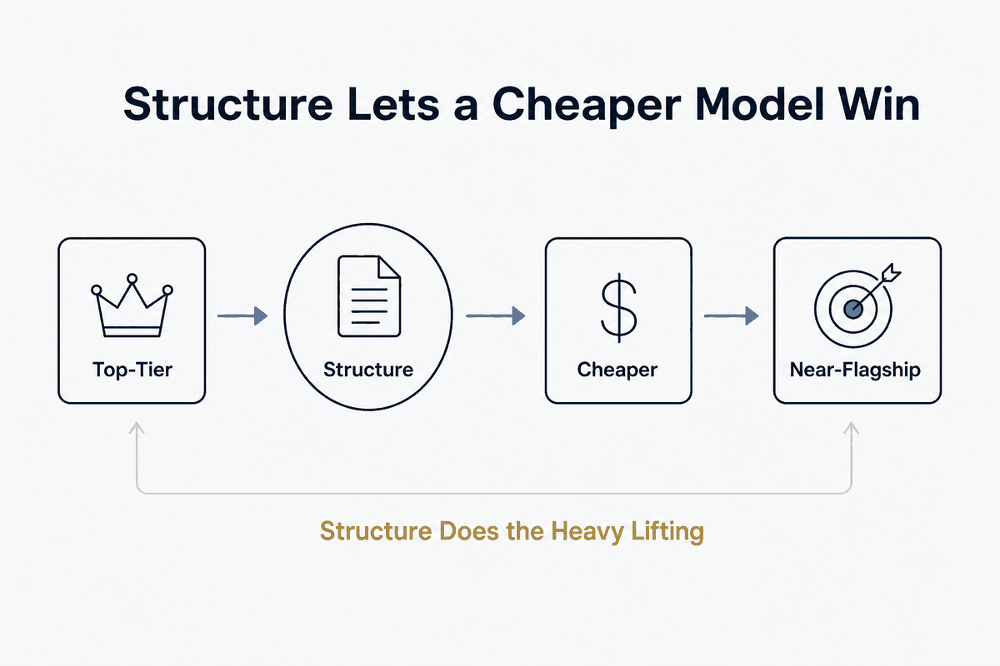

The thesis priced: good context and skills make a cheaper model perform near the top tier. If quality survives a downgrade, the value was your structure.

The thesis made falsifiable — and priced. When people fear losing access to the most expensive model, the honest fix isn't a bigger budget; it's an audit of the structure. A context file that reflects reality, repeated work distilled into standing skills, rules the system actually reads — with those in place, a cheaper model produces near-flagship quality, because the structure is doing the heavy lifting the flagship was being paid to improvise.
That turns "structure beats magic" from a slogan into an experiment anyone can run this afternoon: downgrade the model and watch what happens to the output. If quality survives, the value was in your structure all along. If it collapses, you were renting magic — paying the top tier to compensate, every single run, for context you never wrote down. Same test, two verdicts, and both of them teach you exactly where your money was going.
There's a writing discipline hiding in this, and it's the best one in the whole context-file literature: write for a less capable model. Instructions that only work when the reader is brilliant aren't instructions — they're hopes with a vocabulary. Prose a cheaper model can follow is prose with no gaps to fill by guessing, and that same gap-free prose is what makes the expensive model reliable rather than merely impressive.
The economics compound in one direction. Models get cheaper and interchangeable every quarter; structure appreciates, because every rule and skill you add works with whatever model comes next. The person who invested in the flagship owns a subscription. The person who invested in the structure owns the thing that makes any model — including next year's cheap one — perform.